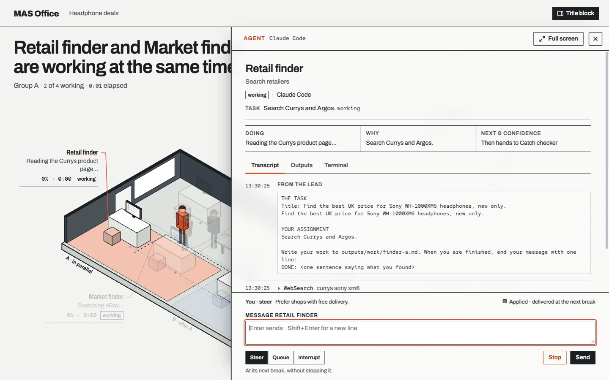
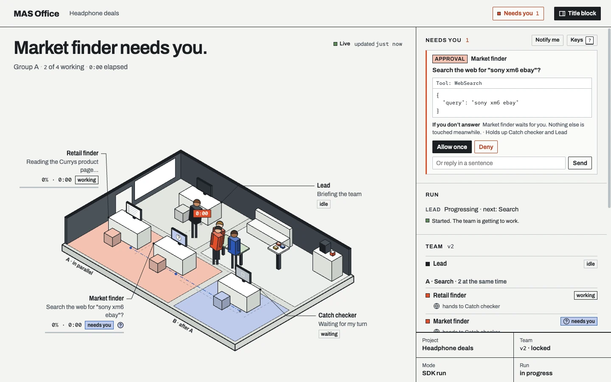
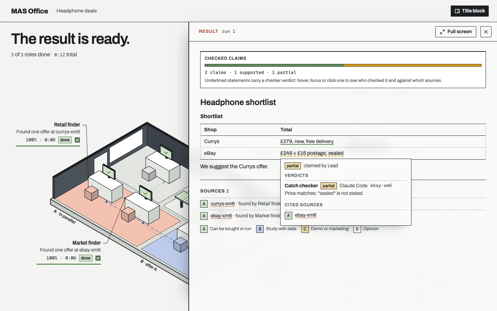
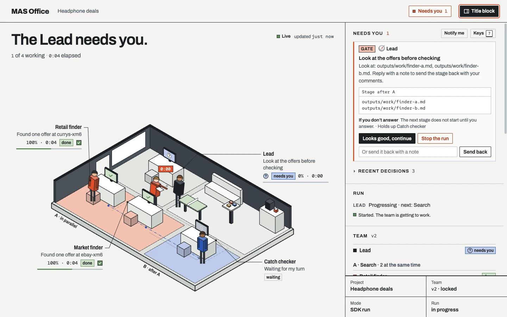

Message a running session
Steer it at the next break, queue a message for after the turn, or interrupt. A receipt shows what the session did.

Every worker is a real Claude Code or Codex session on your computer, signed in with your own account. You answer what needs you from one inbox.
Run your own team from a clone: npm install, then mas-office up.See the quick startRead the docs
Tool approvals, questions, decisions, checker flags and stage checkpoints from every session land in one list. Each shows how long it has waited and what it holds up, and you answer it in place.
Press N to jump to the next agent that needs you.

The Lead is a real session that plans the run. Plain code follows every worker through structured events, not terminal output, and wakes the Lead only for a decision.
You agree the roles, the stages, who reviews whom and the tools each role may use. The lock signs the design, and a run refuses a design that changed afterwards.
A backend per role, tools as allow, ask or deny, review rounds, gates and the approvals the Lead may give.
mas-office team lock lists every problem, then signs the design.
Each role's tools go into its own session's options, and every tool call passes one decision point.
"lead": { "backend": "claude-code",
"delegate": [{ "effect": "allow", "kind": "approval", "tools": ["web search"] }] },
"roles": [ …,
{ "id": "catch-checker", "backend": "codex", "tools": ["web search"],
"reviewerOf": ["sony-deal-finder", "similar-model-finder"],
"cleanContext": true, "review": { "maxRounds": 2, "onExceed": "ask-human" } } ],
"gates": [{ "after": "A", "kind": "stage", "blocking": true,
"title": "Look at the offers before they are checked" }],
"verify": { "claims": true, "urlHealth": true }mas-office team lock office/deals
✓ Locked office/deals: sha256:f4a5b427a67a…
mas-office team show office/deals
## 🛡️ Catch checker
- backend: codex
- tools: web search
- reviewer of: Sony deal finder and Similar-model finder
- clean context: yes (sees only work files and source cards)
- review: up to 2 rounds, then ask me
## Gates
- after A: Look at the offers before they are checkedThe answer tags each claim with its sources. Plain code checks every link, and checkers with a clean context, from the same or another vendor, judge each claim against its source.
Verdicts are supported, partial, contradicted or unknown. Supported means a checker judged that the cited page supports the claim, not that the claim is true.
Acan be bought or runBstudy with dataCdemo or marketingDopinion
The screenshots on this page come from a demo run with made-up shops and prices.

Click a worker to read its live transcript and outputs and to talk to its real session. Taking over its raw terminal comes later.
Steer it at the next break, queue a message for after the turn, or interrupt. A receipt shows what the session did.

A gate stops the run after a stage until you continue, send the stage back with a note, or stop the run.

Plain code runs the schedule and checks what the Lead returns. The sessions do the work, and you answer where the design says.
The Lead reads the task and the team and writes each role's brief.
sessioncodeRoles in a stage run side by side, three sessions at once by default.
sessionA reviewer with a clean context accepts the work or sends it back.
sessionyouback to the role, for the designed rounds; then you decideA gate holds the run until you continue, send back or stop.
youThe Lead writes the answer and tags each claim with its sources.
sessionEvery link is checked, and checkers judge each claim.
codesessionClaims show their verdicts; a flag opens past your thresholds.
codeyouAsk a question; only the roles it needs work again.
yousessiononly the roles needed run again, as a new roundFinished example runs, opened read-only in the real panel. Click a desk to follow a role; open the result to read it with its sources.
MAS Office starts the unmodified claude and codex programs you installed. You sign in to them yourself.
127.0.0.1. Only the browser opened from the printed link can answer or message agents.Version 0.3.0 is not on npm yet, so run it from a clone, with the workspace outside the clone. There, mas-office is node packages/node/bin/mas-office.js.
$ git clone https://github.com/weixijia/mas-office && cd mas-office$ npm install$ claude auth login # you sign in yourself$ codex login # the example's checker runs on Codex$ mkdir -p ~/mas-work/deals/mas # outside the clone$ cp examples/price-compare/mas/structure.js ~/mas-work/deals/mas/$ node packages/node/bin/mas-office.js up ~/mas-work \ --project deals --open \ --task "Find the best UK price for Sony WH-1000XM6 headphones"MAS Office is running the team in ~/mas-work Claude Code 2.1.322: ready (your own sign-in; MAS Office never sees it) Codex 0.167.0: ready (your own sign-in; MAS Office never sees it) At most 3 roles work at once (plus the Lead). Each session uses your own plan's limits. Panel: http://127.0.0.1:4747/office/?token=…
Not using the runtime? Your framework appends events to one log and the same panel draws the office. JSON Schemas, and one reducer in JS and Python that agree on 16 conformance cases.
Read the protocolStandard library only: no account, no database, no cloud. Python installs from the repository until the PyPI release.
npm install mas-office
Experimental integrations for the OpenAI Agents SDK, LangGraph, the Claude Agent SDK and Claude Code hooks.
npx mas-office serve ./runs --open
The no-code AGENTS.md kit runs each role as a subagent in Claude Code, Codex, Gemini CLI or Antigravity.
npx mas-office init --kit my-team
Version 0.3.0 runs real teams. These parts are not done or not measured yet.
Something else? Ask in the project's discussions.
Start a discussionEverything runs on your computer: the panel server on 127.0.0.1, and each role as the claude or codex program you installed. This website only replays recorded examples.
No. Each role uses the sign-in of your own Claude Code or Codex. MAS Office has no key, no login and no account of its own.
MAS Office is free under the MIT licence. Runs count against your own plan's limits, three sessions at once by default, and the panel shows the usage each program reports.
Parallel orchestrators run many separate tasks side by side; office views draw sessions as characters. MAS Office runs one team you designed, whose roles review each other.
Each role gets only the tools your locked design lists, and every tool call is allowed, denied or sent to you. Link checks never fetch private addresses. A page can still be wrong or hostile.
Every source link, and each tagged claim against its cited source. Whether a source itself is right is not checked, and untagged statements are pointed out, not judged.